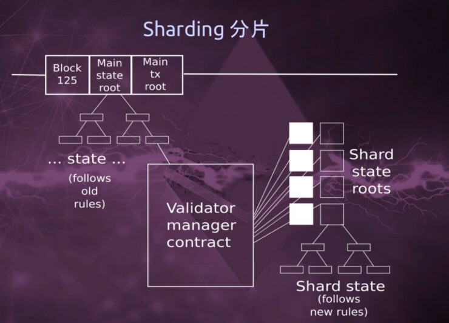
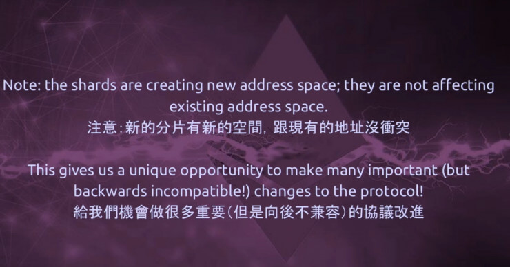

Vitalik Buterin Lays Roadmap for Ethereum Visa Levels Quadratic Sharding
“The ethereum killer is ethereum, the ethereum of China is ethereum, the ethereum of Taiwan is ethereum… 2.0.”

Recently, the Beyond Block 2017 was held in Taipei. “The ethereum killer is ethereum, the ethereum of China is ethereum, the ethereum of Taiwan is ethereum… 2.0.” Vitalik Buterin, Ethereum’s inventor, said in his opening remarks. In the meeting, he laid out a plan to reach Visa levels scalability within the next 3-5 years.
Buterin continued by describing the four areas where he sees a need for improvement on the current Ethereum platform. These were privacy, consensus safety, smart contract safety and scalability.
For each of the first three, the Ethereum co-founder sees a solution that is actively developing. However, the problem of scaling is substantial. Vitalik explained that decentralization, scalability and security are a complex trifecta that can present major challenges in the future. While it’s relatively easy to have any two of the three creating a system where all three are functional has proven difficult.
Scalability on the Ethereum, according to Buterin needs to be thousands of transactions per second, be on-chain only, and be without any supernodes. In other words, it must deal with all three of the issues. The solution, per Vitalik, is found in sharding or allowing side chains were protocol changes can be upgraded while keeping the main chain intact.
The change from Proof of Work to Proof of Stake will be a requirement, and Buterin indicated that the timeline is likely three to five years, though he sees a substantial amount of change happening in the near term, as these upgrades begin to take shape.
About Privacy
That upgrade introduced some fairly fancy new cryptographic algorithms, Buterin says, including zero-knowledge proofs and ring signatures which don’t solve the privacy problem on their own but can give coders tools to build solutions.
From a base layer perspective, the privacy problem is three quarters of the way to being solved, he said. The one quarter that isn’t solved… there’s still leaks at the protocol level. Suggesting base layer privacy has been solved, at least conceptually, by zk-Snarks which give you the ability to hide a transaction from all at the same time as allowing you to choose who you wish to show that transaction.
Ethereum’s main problems
Safety, of course, isn’t a problem you solve, only minimize or maximize as may be the case. But one problem that could be solved is scalability.
However it’s a hard problem due to the trilema of decentralization, security, and scalability. Having two out of three is easy he says, providing examples of current solutions that have made that two out of three trade-off:
Existing blockchains, like Ethereum and Bitcoin in their current state, sacrifice scalability, he says, while super big blocks, at the size of 10GB, would sacrifice decentralization, Buterin says.
But ethereum aims to have all three without sacrificing either. One such way is through second layer solutions, like Plasma, Raiden, or the Lightning Network, however ethereum also aims to achieve the trilemma of decentralization, safety and scalability, all on-chain.

He says ethereum aims to scale on-chain, to thousands of transactions, without masternodes, consortium nodes, or any other centralizing aspects. Therefore he presents a first and somewhat basic conceptualized version of sharding.
“The way I generally describe sharding is… you can think of it as, in a fairly simple version, creating a blockchain where you have, lets say, a hundred different universes and each of these universes is a different account space. So you can have an account in some universe or you can have a contract in some universe and you can send a transaction in some universe and if you send a transaction in some universe it only affects stuff in some universe.
” Buterin says before adding:
You might have some protocol of transferring resources, transferring data, between these universes, but it could be more limited, it could be something asynchronous, it could have a two weeks delay, and generally it’s not as clean and convenient as doing stuff in one universe.
But these 100 universes are not just separate blockchains, they are systems that are also interconnected with each other. Particularly, they share consensus. So in order to break even one of them, you have to break the whole thing.
Here’s one example of something we can design fairly easily in the near term. Let’s imagine we keep the main blockchain and into the main blockchain we would publish a contract, and this contract would be called the validator manager contract [which] would maintain an internal Proof of Stake (PoS) system…
This doesn’t describe every possible sharding solution out there, and we can really ratchet things up on the margins and eventually make communications between these different universes really good and possibly even blur the distinction between going across universes and between universes, but this is one simple way of thinking about it.
How would an instantiation of this actually work on ethereum? We could try think about the very far end of what the optimal system would look like, or we can try think about what we can design fairly easily in the near term.
Each of these shards have blocks and transactions, but we are not going to put all of those blocks and transactions into the main chain. Instead, what we are going to do, we are going to take the same structure ethereum currently has, where you have a big block that gets represented by a tiny header, and we’re just going to replicated again one level down.
At the shard level we would have things called collations. A collation is basically just a group of transactions and the collation would have a collation header that would be basically a PoS signed block header, and these collation headers would be pushed into the validator manager contract, but all of the actual transactions in the shards, all of the shards states, all of the shards collations, that would go off-chain.

You’d have these two worlds, Buterin says. You’d have the old world that keeps operating with the same level of scalability which currently is limited as each transaction is replicated by each node that has to run on a laptop.
And this new world with its own rules which has quadratic scalability as nodes validate certain shards and act as light clients for other shards, with this new world potentially having even higher levels of scalability dependent on how sharding is implemented or incrementally improved.

This is all in the early stages of sharding, Buterin says, laying out the roadmap of how it would progress, with it eventually being incorporated at a protocol level through “tight coupling.”
That being, the ethereum network upgrades so that clients enforce a rule which says if the blockchain contains a sharding header that is invalid then the entire blockchain is invalid.
“So basically tight coupling is where the validity of layer two becomes a condition for the validity of layer one,” Buterin says. At which stage the entire sharding system would have the same level of uniform security and it would all be governed by hardforks.
Initially there would be a two speeds ethereum with individuals running an eth node and a sharding node connected to the eth node. The two then eventually, once the network moves to tight coupling, are merged together.
The new shards create a new address space, he says, which means it doesn’t affect normal transactions and the current network.
Allowing devs to engage in important innovations, Buterin says, as they can operate more freely on the shards by turning on improvements only on the shards.
Eventually the main-chain will need to be upgraded, but we can do that later he says as there is no need to slow down by requiring constant on-chain backwards incompatible upgrades.

Ethereum, thus, is to transition into a two speeds lane until it eventually merges again into one road down the line.With developers working on new shards, incrementally improving the code, adding zk-Snarks to shards and other features, increasing their ability to share data and communicate, and then continuously refining it through relatively minor improvements.
The time-line laid out is 3-5 years, thus around 2020. But one of the most difficult aspects, the architecture, seems to have reached a stable conceptual level, so we might perhaps see prototypes even by next year and potential first alpha versions in 2019 or earlier.
References：http://www.trustnodes.com/2017/11/25/vitalik-buterin-lays-roadmap-ethereum-visa-levels-quadratic-sharding https://cointelegraph.com/news/vitalik-lays-out-ethereum-20-roadmap-in-taiwan
「 Declaration: Please indicate the source if repost the article in UNITIMES. Opinions expressed by Contributors belong to themselves. 」